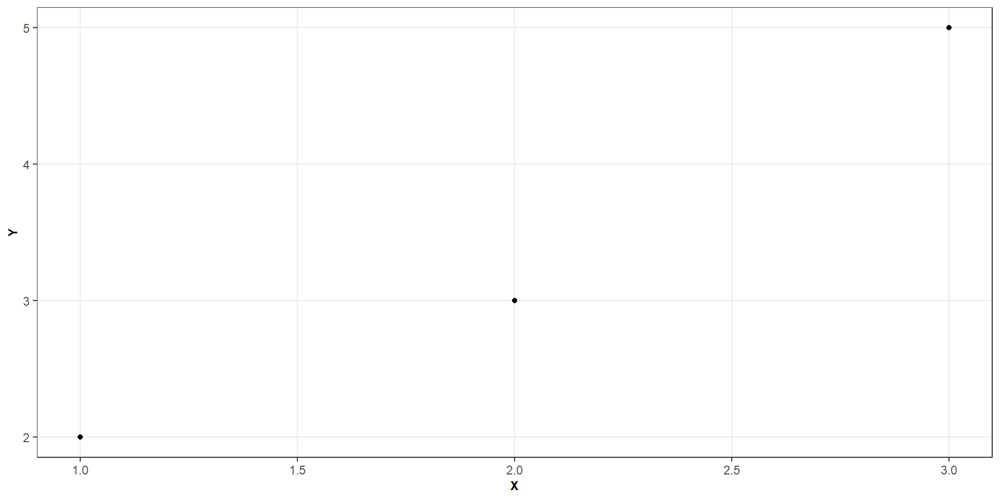

| y | x1 | x2 |
|---|---|---|
| 6.1 | 1 | 0 |
| 5.4 | 2 | 0 |
| 7.2 | 3 | 0 |
| 8.9 | 1 | 1 |
| 9.1 | 2 | 1 |
| 11.6 | 3 | 1 |
Multiple Regression: Matrix Notation
ST303 - Linear Models
By the end of this lecture, we should be able to:
We already know how to fit a regression model
Today, we will express the same ideas using matrices
\[ \boxed{ \text{Model} \rightarrow \text{Predictions} \rightarrow \text{Residuals} \rightarrow \text{Minimise SSE} } \]
Matrix notation lets us perform these calculations for many observations and many predictors at once
Let’s suppose we have \(n\) observations and \(k\) predictors
For each observation we can write
\[ Y_i=\beta_0 + \beta_1X_{i1} + \cdots + \beta_kX_{ik} + \varepsilon_i \]
Writing this equation separately for every observation becomes tedious
Matrix notation allows us to represent all \(n\) equations simultaneously
It also makes the mathematics easier to generalise to more complicated linear models
Suppose we have three observations and two predictors
\[ \begin{align*} Y_1 &= \beta_0+\beta_1X_{11}+\beta_2X_{12}+\varepsilon_1,\\ Y_2 &= \beta_0+\beta_1X_{21}+\beta_2X_{22}+\varepsilon_2,\\ Y_3 &= \beta_0+\beta_1X_{31}+\beta_2X_{32}+\varepsilon_3 \end{align*} \]
Notice that the coefficients are the same across observations
While the predictor values and errors vary
How could we collect these equations into a single expression?
Let \(\mathbf Y\) denote the response vector (i.e., a vector of observed responses)
\[ \mathbf{Y} = \begin{bmatrix} Y_1 \\ Y_2 \\ \vdots \\ Y_n \end{bmatrix} \]
With dimension \(\mathbf{Y} \in \mathbb{R}^{n \times 1}\)
Within this matrix there is one row for every observation and one column containing the response.
Let \(\mathbf{X}\) denote the design matrix such that:
\[ \mathbf{X}= \begin{bmatrix} 1 & X_{11} & \cdots &X_{1k} \\ 1 & X_{21} & \cdots &X_{2k} \\ \vdots &\vdots &\ddots &\vdots \\ 1 & X_{n1} & \cdots & X_{nk} \end{bmatrix} \]
The first column contains ones because the model includes an intercept
There are \(n\) rows and \(p = k + 1\) columns such that \(\mathbf{X} \in \mathbb{R}^{n\times p}\)
Each row represents an observation and each column represents a model term.
We can collect all the unknown parameters and errors into a parameter vector and an error vector, respectively
\[ \boldsymbol{\beta} = \begin{bmatrix} \beta_0 \\ \beta_1 \\ \vdots \\ \beta_k \end{bmatrix} \]
\[ \boldsymbol{\varepsilon} = \begin{bmatrix} \varepsilon_1 \\ \varepsilon_2 \\ \vdots \\ \varepsilon_n \end{bmatrix} \]
In matrix form, the multiple linear regression model thus becomes
\[ \boxed{\mathbf{Y} = \mathbf{X} \boldsymbol{\beta} + \boldsymbol{\varepsilon}} \]
\[ \mathbf{Y} = \begin{bmatrix} Y_1 \\ Y_2 \\ \vdots \\ Y_n \end{bmatrix} \quad \mathbf{X}= \begin{bmatrix} 1 & X_{11} & \cdots &X_{1k} \\ 1 & X_{21} & \cdots &X_{2k} \\ \vdots &\vdots &\ddots &\vdots \\ 1 & X_{n1} & \cdots & X_{nk} \end{bmatrix} \quad \boldsymbol{\beta} = \begin{bmatrix} \beta_0 \\ \beta_1 \\ \vdots \\ \beta_k \end{bmatrix} \quad \boldsymbol{\varepsilon} = \begin{bmatrix} \varepsilon_1 \\ \varepsilon_2 \\ \vdots \\ \varepsilon_n \end{bmatrix} \]
where
\[ \mathbf{e} = \mathbf{Y} - \mathbf{X} \hat{\boldsymbol{\beta}} \]
Our objective is to find the coefficient vector that makes these residuals collectively as small as possible in
the least-squares sense.
Using ordinary least squares we want to minimise
\[ S(\beta) = \sum^n_{j = 1}(y_i - \beta_0 - \beta_1x_{i1} - \dots - \beta_kx_{ik})^2 \]
In matrix form we can represent this as
\[ S(\boldsymbol{\beta}) = (\mathbf{Y} - \mathbf{X} \boldsymbol{\beta})^\mathsf{T}(\mathbf{Y} - \mathbf{X} \boldsymbol{\beta}) \]
Why does this work?
If we expand out our above equation
\[ \begin{aligned} S(\boldsymbol{\beta}) &= (\mathbf{Y} - \mathbf{X} \boldsymbol{\beta})^\mathsf{T}(\mathbf{Y} - \mathbf{X} \boldsymbol{\beta}) \\[4pt] &=\mathbf{Y}^\mathsf{T} \mathbf{Y} - \mathbf{Y}^\mathsf{T} \mathbf{X}\boldsymbol{\beta} -\boldsymbol{\beta}^\mathsf{T} \mathbf{X}^\mathsf{T} \mathbf{Y} + \boldsymbol{\beta}^\mathsf{T} \mathbf{X}^\mathsf{T} \mathbf{X} \boldsymbol{\beta} \\[4pt] &=\mathbf{Y}^\mathsf{T} \mathbf{Y} - \underbrace{\mathbf{Y}^\mathsf{T} \mathbf{X}\boldsymbol{\beta} -\boldsymbol{\beta}^\mathsf{T} \mathbf{X}^\mathsf{T} \mathbf{Y}}_{\text{These two equations are the same}} + \boldsymbol{\beta}^\mathsf{T} \mathbf{X}^\mathsf{T} \mathbf{X} \boldsymbol{\beta} \\[4pt] &= \mathbf{Y}^\mathsf{T} \mathbf{Y} - 2 \boldsymbol{\beta}^\mathsf{T} \mathbf{X}^\mathsf{T} \mathbf{Y} +\boldsymbol{\beta}^\mathsf{T} \mathbf{X}^\mathsf{T} \mathbf{X}\boldsymbol{\beta} \end{aligned} \]
Hence
\[ \boxed{S(\boldsymbol{\beta}) = \mathbf{Y}^\mathsf{T} \mathbf{Y} - 2 \boldsymbol{\beta}^\mathsf{T} \mathbf{X}^\mathsf{T} \mathbf{Y} +\boldsymbol{\beta}^\mathsf{T} \mathbf{X}^\mathsf{T} \mathbf{X}\boldsymbol{\beta}} \]
\[ \boxed{S(\boldsymbol{\beta}) = \mathbf{Y}^\mathsf{T} \mathbf{Y} - 2 \boldsymbol{\beta}^\mathsf{T} \mathbf{X}^\mathsf{T} \mathbf{Y} +\boldsymbol{\beta}^\mathsf{T} \mathbf{X}^\mathsf{T} \mathbf{X}\boldsymbol{\beta}} \]
When we differentiate the above equation with respect to \(\beta\), we are left with
\[ \frac{\partial S}{\partial\boldsymbol{\beta}} = -2\mathbf{X}^\mathsf{T} \mathbf{Y} + 2 \mathbf{X}^\mathsf{T} \mathbf{X} \boldsymbol{\beta} \]
Setting this equal to 0
\[ -2 \mathbf{X}^\mathsf{T} \mathbf{Y} + 2\mathbf{X}^\mathsf{T}\mathbf{X} \hat{\boldsymbol\beta} = 0 \]
Which can then be simplified down into
\[ \boxed{ \mathbf X^\mathsf T\mathbf X \hat{\boldsymbol\beta} =\mathbf X^\mathsf T\mathbf Y } \]
This is our normal equation
\[ \boxed{ \mathbf X^\mathsf T\mathbf X \hat{\boldsymbol\beta} =\mathbf X^\mathsf T\mathbf Y } \]
To get a formula for estimating \(\boldsymbol{\beta}\) we can multiply both sides of our equation by the inverse of \(\mathbf{X}^\mathsf{T} \mathbf{X}\) such that
\[ \boxed{ \hat{\boldsymbol\beta} =(\mathbf X^\mathsf T\mathbf X)^{-1} \mathbf X^\mathsf T\mathbf Y } \]
The formula requires \(\mathbf X\) to have full column rank
This means no column is an exact linear combination of the others
If the columns of \(\mathbf{X}\) are linearly dependent, then \(\mathbf{X}^\mathsf{T} \mathbf{X}\) is singular and the usual inverse formula does not apply
Near-linear dependence can also make coefficient estimates numerically unstable

\[ Y = \begin{bmatrix} 2 \\ 3 \\ 5 \end{bmatrix} \qquad X = \begin{bmatrix} 1 & 1 \\ 1 & 2 \\ 1 & 3 \end{bmatrix} \]
\[ \boxed{ \mathbf X^\mathsf T\mathbf X \hat{\boldsymbol\beta} =\mathbf X^\mathsf T\mathbf Y } \]
\[ \mathbf{X}^\mathsf{T} \mathbf{X} = \begin{bmatrix} 3 & 6 \\ 6 & 14 \end{bmatrix} \qquad \mathbf X^\mathsf T\mathbf Y = \begin{bmatrix} 10 \\ 23\end{bmatrix} \]
Hence
\[ \begin{bmatrix} 3 & 6 \\ 6 & 14 \end{bmatrix} \begin{bmatrix} \hat{\beta_0} \\ \hat{\beta_1} \end{bmatrix} = \begin{bmatrix} 10 \\ 23\end{bmatrix} \]
\[ \hat{y} = 0.33 + 1.5x \]
Under the model assumptions
\[ E(\widehat{\boldsymbol\beta}\mid\mathbf X) =\boldsymbol\beta \]
Its covariance matrix is
\[ \boxed{ \widehat{\operatorname{Var}}( \widehat{\boldsymbol\beta}) =\widehat{\sigma}^2 (\mathbf X^\mathsf T\mathbf X)^{-1} } \]
\[ \hat{\sigma}^2 = \frac{\sum^n_{i = 1}e^2_i}{n - p} \]
\[ \hat{y}_i = \hat{\beta_0} + \hat{\beta_1}x_{i1} + \dots + \hat{\beta_k}x_{ik} \]
Or in matrix form as
\[ \widehat{\mathbf Y} = \mathbf X\widehat{\boldsymbol\beta} \]
Hence for any new configuration of predictors, the predicted conditional mean becomes
\[ \boxed{\widehat{y_0} = \mathbf{x_0}^\mathsf{T} \hat{\boldsymbol{\beta}}} \]
The row vector \(\mathbf x_0^\mathsf T\) must contain the same model terms, in the same order, as the columns of \(\mathbf X\)
Let’s suppose we want to estimate \(\mu = \mathcal{E}[y]\) at a particular value of \(\mathbf{x}_0 = (1, x_{01}, x_{02}, \dots x_{0k})^\top\)
Our estimate is
\[ \mu_0 = E(Y_0 \mid \mathbf x_0) = \mathbf x_0^\mathsf T \hat{\boldsymbol \beta} \]
with a standard error of
\[ SE_{\text{fit}}= \widehat\sigma \sqrt{ \mathbf x_0^\mathsf T (\mathbf X^\mathsf T\mathbf X)^{-1} \mathbf x_0 } \]
A \(100 (1 - \alpha)\%\) confidence interval is
\[ \boxed{\widehat y_0 \pm t_{n-p,\,1-\alpha/2}SE_{\text{fit}}} \]
This interval quantifies uncertainty about the conditional mean response at the specified predictor values
For a new observation: \(\mathbf{x}_0 = (1, x_{01}, x_{02}, ..., x_{0k})^T\), the estimate is:
\[ \hat{y_0} = \mathbf x_0^\mathsf T \hat{\boldsymbol \beta} \]
with a predicted standard error
\[ SE_{\text{pred}}= \widehat\sigma \sqrt{ 1+ \mathbf x_0^\mathsf T (\mathbf X^\mathsf T\mathbf X)^{-1} \mathbf x_0 } \]
Thus, a \(100 (1 - \alpha)\%\) prediction interval is
\[ \boxed{\widehat y_0 \pm t_{n-p,\,1-\alpha/2}SE_{\text{pred}}} \]
Consider the simple linear regression model
\[ Y_i = \beta_0 + \beta_1X_i + \varepsilon_i \]
The design matrix can be written as
\[ \mathbf X= \begin{bmatrix} 1 & X_1 \\ 1 & X_2 \\ \vdots & \vdots \\ 1 & X_n \end{bmatrix} \]
The ordinary least squares estimator is
\[ \widehat{\boldsymbol\beta} =(\mathbf X^\mathsf T\mathbf X)^{-1} \mathbf X^\mathsf T\mathbf Y \]
\[ \mathbf X= \begin{bmatrix} 1 & X_1 \\ 1 & X_2 \\ \vdots & \vdots \\ 1 & X_n \end{bmatrix} \]
\[ \mathbf X^\mathsf T= \begin{bmatrix} 1 & 1 & \cdots & 1 \\ X_1 & X_2 & \cdots & X_n \end{bmatrix} \]
\[ \mathbf X^\mathsf T\mathbf X= \begin{bmatrix} n & \sum X_i \\ \sum X_i & \sum X_i^2 \end{bmatrix} \]
Using the formula for the inverse of a \(2 \times 2\) matrix
\[ (\mathbf X^\mathsf T\mathbf X)^{-1} = \frac{1}{\text{det}(\mathbf X^\mathsf T\mathbf X)} \begin{bmatrix} \sum X_i^2 & -\sum X_i \\ -\sum X_i & n \end{bmatrix} \qquad \text{ where det}(\mathbf X^\mathsf T\mathbf X) = n\sum X_i^2-\left(\sum X_i\right)^2 = nS_{xx} \]
\[ \mathbf X^\mathsf T\mathbf Y= \begin{bmatrix} \sum Y_i\\ \sum X_iY_i \end{bmatrix} \]
Multiplying the matrices and simplifying gives
\[ \boxed{\widehat\beta_1 = \frac{S_{xy}}{S_{xx}}} \]
\[ \boxed{\widehat\beta_0 = \bar Y - \widehat \beta_1 \bar X} \]
Matrix notation generalises the least-squares procedure
Recall that
\[ \operatorname{Var}(\widehat{\boldsymbol\beta}) =\sigma^2(\mathbf X^\mathsf T\mathbf X)^{-1} \]
\[ (\mathbf X^\mathsf T\mathbf X)^{-1} = \frac{1}{\text{det}(\mathbf X^\mathsf T\mathbf X)} \begin{bmatrix} \sum X_i^2 & -\sum X_i \\[4pt] -\sum X_i & n \end{bmatrix} \]
Thus
\[ \operatorname{Var}(\widehat{\boldsymbol\beta}) = \sigma^2 \begin{bmatrix} \frac{\sum X_i^2}{nS_{xx}} & - \frac{\sum X_i}{nS_{xx}} \\[4pt] -\frac{\sum X_i}{nS_{xx}} & \frac{n}{nS_{xx}} \end{bmatrix} \]
\[ \operatorname{Var}(\widehat\beta_0) =\sigma^2\left( \frac1n+\frac{\bar X^2}{S_{xx}} \right) \]
\[ \operatorname{Var}(\widehat\beta_1) =\frac{\sigma^2}{S_{xx}} \]
\[ \operatorname{Cov}(\widehat\beta_0,\widehat\beta_1) =-\frac{\bar X\sigma^2}{S_{xx}} \]
The matrix expression gives the variances and covariance of the two coefficient estimates in one calculation.
Suppose we observe six responses and two predictors
We want to fit
\[ Y_i=\beta_0 + \beta_1X_{i1} + \beta_2X_{i1}^2 + \beta_3X_{i2} +\varepsilon_i \]
| y | x1 | x2 |
|---|---|---|
| 6.1 | 1 | 0 |
| 5.4 | 2 | 0 |
| 7.2 | 3 | 0 |
| 8.9 | 1 | 1 |
| 9.1 | 2 | 1 |
| 11.6 | 3 | 1 |
The columns must correspond to the model terms in the order
\[ (1,\ X_1,\ X_1^2,\ X_2) \]
\[ \boxed{ \widehat{\boldsymbol\beta} =(\mathbf X^\mathsf T\mathbf X)^{-1} \mathbf X^\mathsf T\mathbf Y } \]
fit <- lm(y ~ x1 + I(x1^2) + x2, data = toy_data)
summary(fit)
##
## Call:
## lm(formula = y ~ x1 + I(x1^2) + x2, data = toy_data)
##
## Residuals:
## 1 2 3 4 5 6
## 0.41667 -0.03333 -0.38333 -0.41667 0.03333 0.38333
##
## Coefficients:
## Estimate Std. Error t value Pr(>|t|)
## (Intercept) 8.3333 1.7634 4.726 0.0420 *
## x1 -3.8500 1.9850 -1.939 0.1920
## I(x1^2) 1.2000 0.4912 2.443 0.1345
## x2 3.6333 0.4631 7.846 0.0159 *
## ---
## Signif. codes: 0 '***' 0.001 '**' 0.01 '*' 0.05 '.' 0.1 ' ' 1
##
## Residual standard error: 0.5672 on 2 degrees of freedom
## Multiple R-squared: 0.9752, Adjusted R-squared: 0.9381
## F-statistic: 26.25 on 3 and 2 DF, p-value: 0.03692Fitted values
\[ \widehat{\mathbf Y} = \mathbf X \hat{\boldsymbol\beta} \]
Residuals
\[ \mathbf e=\mathbf Y-\widehat{\mathbf Y} \]
y_hat <- X %*% beta_hats
e <- Y - y_hat
tibble(
observed = y,
fitted = drop(y_hat),
residual = drop(e)
)
## # A tibble: 6 × 3
## observed fitted residual
## <dbl> <dbl> <dbl>
## 1 6.1 5.68 0.417
## 2 5.4 5.43 -0.0333
## 3 7.2 7.58 -0.383
## 4 8.9 9.32 -0.417
## 5 9.1 9.07 0.0333
## 6 11.6 11.2 0.383The multiple regression model can be expressed as
\[ \mathbf Y=\mathbf X\boldsymbol\beta+ \boldsymbol\varepsilon \]
The OLS estimator is
\[ \widehat{\boldsymbol\beta} =(\mathbf X^\mathsf T\mathbf X)^{-1} \mathbf X^\mathsf T\mathbf Y \]
when \(\mathbf X\) has full column rank
The residuals satisfy
\[ \mathbf X^\mathsf T\mathbf e= 0 \]
The estimated coefficient covariance matrix is
\[ \widehat{\operatorname{Var}}( \widehat{\boldsymbol\beta}) =\widehat\sigma^2 (\mathbf X^\mathsf T\mathbf X)^{-1} \]
These expressions underpin coefficient estimation, uncertainty quantification, confidence intervals and prediction intervals.